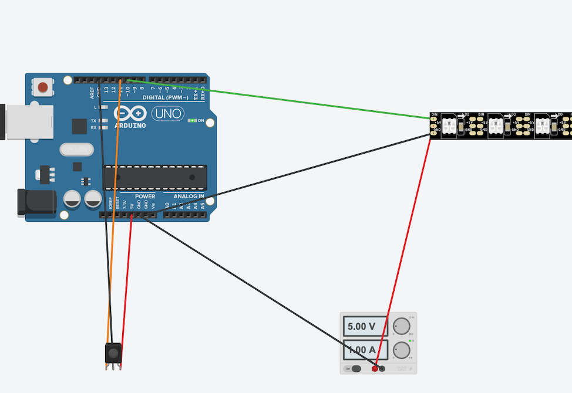

Final Assignment: Rainbow LED Strip

For my final project, I made a remote controlled LED strip using an WS2812B LED Strip, a remote control I had from a normal RGB LED Strip, and IR receiver, and a fun box. I recreated most of the functionality of my original LED strip with some special animations that are possible because of the arduino and the individually addressable LEDs. I made this because my old LEDs are okay but the these ones can do much more impressive animations like a rainbow fade.

Technical Implementation
This LED strip was somewhat hard to implement. The actual wiring and schematics is very simple, because the WS2812B LED Strip does not require any extra resistors or transistors. However, making an optimal remote controlled LED experience was harder to figure out because because the special animations were hard to break out of once started. I had to use a special neopixel tutorial to avoid using delay() in my implementation and also had to use some tricky boolean logic to make an animation stop.Circuitry and Schematics
Like I mentioned earlier, the actual circuitry of this project is very simple. The LEDs require a 5v 1amp power source, which is supplied via a power cord, a data pin connected to the arduino to read input, and a connection to ground. the power cord also needs to be connected to ground. The IR receiver requires also the exact same cords, which are all plugged into the arduino (though it requires less current then the LED strip).
I soldered all the wire connections from the arduino to a perf board, which then had wires soldered to go out to all the different parts of the project. I the perf board and the arduino into a small cardboard box, the fun box. This box has some nice drawings I did and has the IR receiver attached to the front. I 3D printed an enclosure for the arduino that surrounds the entirety of it very snug, so there is no chance of the wiring from the perf board accidentally touching the arduino and cause the device to malfunction
Code
The code was a much bigger challenge to get working properly. There are a lot of different resources for many animations for LEDs, especially using the neopixel library. Unfortunately, these animations rely on using delay() to do special animations. Because delay() stops the entire arduino, it made it impossible to change the animation using IR until the animation finished. And even then, you would have to repress the button to start the animation over again once it finished, which is not ideal for having as a background light. So, I had to look into other methods of getting the lights to do an animation but still be responsive to new IR input.
I first tried to use interrupts, but they turned out to be complicated and not actually help make the strip work how I wanted it to. After lots of research, I found a great tutorial by adafruit which addressed my problem by using specially recreated functions that utilized the millis() function and an update() method within the main loop to substitute for the normal delay() animations (https://learn.adafruit.com/multi-tasking-the-arduino-part-3/using-neopatterns). Unfortunately, this tutorial only responded to the animation changing once, based on whether a button was pressed or not. When I tried to integrate this into my IR remote switch version, it did not work because the IR data received was uninterpretable when the loop was simultaneously running the update() method (I still odo not understand why this is, I know the arduino is single threaded but I checked and it still had ram available and was able to pick up when I pressed the remote, which meant it was capable of doing both update and read IR at the same time). This caused the case to never switch, so the animation would go on forever and not be able to be switched out of.
Eventually, I found a pretty creative (terrible) way of dealing with this problem. I put a boolean flag that determined whether or not to use the update method in the main loop. When the remote switched to a setting with an animation, the flag would be true and allow the animation. However, if any unrecognized button was read after that animation starts, then the flag would be false and prevent the update() method from going again. This would stop the animation and allow for any other input. Though not ideal, it is the only way I could find to deal with this problem and only slightly hinder my experience using it.
I mostly recreated my old LED strip, using the remote for inspiration while adding some special animations. I tried to recreate all the base colors the original remote had, and added a couple of my own as well. I also made it possible to change the RGB values of whatever color you were on, which was different from my original LED. So you could adjust to whatever color you wanted to go to. You could also change the brightness of all the LEDs and the speed of the animations. The rainbow, theater chase, and scanner animations were included in the tutorial I used, but after tinkering with the functions I was able to create the rainbowTheaterChase function myself. I would like to implement some other special animations I made, but the initial IR bug took so long to debug that I only started actually assigning values to the remote yesterday. After this course, I plan to try and create so more interesting animations myself and then add them onto the few buttons at the end of the remote that I have yet to give any functionality.
Here is a video demo of my LEDs and here is the code that runs it:
#include // Neopixel library for controlling LED
#include // Library for IR Remote
#define IR_Receiver 11 // Pin 1 of IR receiver to Arduino digital Pin 11
#define LED_PIN 10 // Data Pin of Led strip
#define LED_COUNT 240 // Number of LEDs in your strip
#define BRIGHTNESS 55 // Initial Brightness
#define BRIGHTNESS_INCREMENT 25 // Increase/Decrease Brightness by this value
#define MIN_BRIGHTNESS 5 // Minimum Brightness
#define MAX_BRIGHTNESS 255 // Maximum Brightness
int R = 0; // Red Value
int G = 0; // Main Green Value
int B = 0;
int interval = 100;
unsigned long key_value = 0;
// This Neopatterns class was taken from a tutorial on adafruits website:
// https://learn.adafruit.com/multi-tasking-the-arduino-part-3/using-neopatterns
// Initialize IR Receiver
IRrecv irrecv(IR_Receiver); // create instance of 'irrecv'
decode_results results; // create instance of 'decode_results'
int currentBrightness; // This will save the current Brightness
bool check; // check to see if you should be updating an animation
// Pattern types supported:
enum pattern
{
NONE,
RAINBOW_CYCLE,
THEATER_CHASE,
COLOR_WIPE,
SCANNER,
FADE,
THEATER_CHASE_RAINBOW
};
// Pattern directions supported:
enum direction
{
FORWARD,
REVERSE
};
// NeoPattern Class - derived from the Adafruit_NeoPixel class
class NeoPatterns : public Adafruit_NeoPixel
{
public:
// Member Variables:
pattern ActivePattern; // which pattern is running
direction Direction; // direction to run the pattern
unsigned long Interval; // milliseconds between updates
unsigned long lastUpdate; // last update of position
uint32_t Color1, Color2; // What colors are in use
uint16_t TotalSteps; // total number of steps in the pattern
uint16_t Index; // current step within the pattern
void (*OnComplete)(); // Callback on completion of pattern
// Constructor - calls base-class constructor to initialize strip
// final parameter for callback (if wanted) : void (*callback)()
NeoPatterns(uint16_t pixels, uint8_t pin, uint8_t type)
: Adafruit_NeoPixel(pixels, pin, type)
{
// OnComplete = callback;
}
// Update the pattern
void Update()
{
// Serial.println(" inupdate");
if ((millis() - lastUpdate) > Interval) // time to update
{
lastUpdate = millis();
switch (ActivePattern)
{
case RAINBOW_CYCLE:
RainbowCycleUpdate();
break;
case THEATER_CHASE:
TheaterChaseUpdate();
break;
case COLOR_WIPE:
ColorWipeUpdate();
break;
case SCANNER:
ScannerUpdate();
break;
case FADE:
FadeUpdate();
break;
case THEATER_CHASE_RAINBOW:
TheaterChaseRainbowUpdate();
break;
default:
break;
}
}
}
// Increment the Index and reset at the end
void Increment()
{
if (Direction == FORWARD)
{
Index++;
if (Index >= TotalSteps)
{
Index = 0;
// if (OnComplete != NULL)
// {
// OnComplete(); // call the completion callback
// }
}
}
else // Direction == REVERSE
{
--Index;
if (Index <= 0)
{
Index = TotalSteps - 1;
// if (OnComplete != NULL)
// {
// OnComplete(); // call the completion callback
// }
}
}
}
// Reverse pattern direction
void Reverse()
{
if (Direction == FORWARD)
{
Direction = REVERSE;
Index = TotalSteps - 1;
}
else
{
Direction = FORWARD;
Index = 0;
}
}
// Initialize for a RainbowCycle
void RainbowCycle(uint8_t interval, direction dir = FORWARD)
{
ActivePattern = RAINBOW_CYCLE;
Interval = interval;
TotalSteps = 255;
Index = 0;
Direction = dir;
}
// Update the Rainbow Cycle Pattern
void RainbowCycleUpdate()
{
for (int i = 0; i < numPixels(); i++)
{
setPixelColor(i, Wheel(((i * 256 / numPixels()) + Index) & 255));
}
show();
Increment();
}
// Initialize for a Theater Chase
void TheaterChase(uint32_t color1, uint32_t color2, uint8_t interval, direction dir = FORWARD)
{
ActivePattern = THEATER_CHASE;
Interval = interval;
TotalSteps = numPixels();
Color1 = color1;
Color2 = color2;
Index = 0;
Direction = dir;
}
// Update the Theater Chase Pattern
void TheaterChaseUpdate()
{
for (int i = 0; i < numPixels(); i++)
{
if ((i + Index) % 3 == 0)
{
setPixelColor(i, Color1);
}
else
{
setPixelColor(i, Color2);
}
}
show();
Increment();
}
// Initialize for a Theater Chase Rainbow (figured out by Tre Paolini, not in original example)
void TheaterChaseRainbow(uint8_t interval, direction dir = FORWARD)
{
ActivePattern = THEATER_CHASE_RAINBOW;
Interval = interval;
TotalSteps = numPixels();
Index = 0;
Direction = dir;
}
// Update the Theater Chase Pattern
void TheaterChaseRainbowUpdate()
{
for (int i = 0; i < numPixels(); i++)
{
if ((i + Index) % 3 == 0)
{
setPixelColor(i, Wheel(((i * 256 / numPixels()) + Index) & 255));
} else
{
setPixelColor(i, 0);
}
}
show();
Increment();
}
// Initialize for a ColorWipe
void ColorWipe(uint32_t color, uint8_t interval, direction dir = FORWARD)
{
ActivePattern = COLOR_WIPE;
Interval = interval;
TotalSteps = numPixels();
Color1 = color;
Index = 0;
Direction = dir;
}
// Update the Color Wipe Pattern
void ColorWipeUpdate()
{
setPixelColor(Index, Color1);
show();
Increment();
}
// Initialize for a SCANNNER
void Scanner(uint32_t color1, uint8_t interval)
{
ActivePattern = SCANNER;
Interval = interval;
TotalSteps = (numPixels() - 1) * 2;
Color1 = color1;
Index = 0;
}
// Update the Scanner Pattern
void ScannerUpdate()
{
for (int i = 0; i < numPixels(); i++)
{
if (i == Index) // Scan Pixel to the right
{
setPixelColor(i, Color1);
}
else if (i == TotalSteps - Index) // Scan Pixel to the left
{
setPixelColor(i, Color1);
}
else // Fading tail
{
setPixelColor(i, DimColor(getPixelColor(i)));
}
}
show();
Increment();
}
// Initialize for a Fade
void Fade(uint32_t color1, uint32_t color2, uint16_t steps, uint8_t interval, direction dir = FORWARD)
{
ActivePattern = FADE;
Interval = interval;
TotalSteps = steps;
Color1 = color1;
Color2 = color2;
Index = 0;
Direction = dir;
}
// Update the Fade Pattern
void FadeUpdate()
{
// Calculate linear interpolation between Color1 and Color2
// Optimise order of operations to minimize truncation error
uint8_t red = ((Red(Color1) * (TotalSteps - Index)) + (Red(Color2) * Index)) / TotalSteps;
uint8_t green = ((Green(Color1) * (TotalSteps - Index)) + (Green(Color2) * Index)) / TotalSteps;
uint8_t blue = ((Blue(Color1) * (TotalSteps - Index)) + (Blue(Color2) * Index)) / TotalSteps;
ColorSet(Color(red, green, blue));
show();
Increment();
}
// Calculate 50% dimmed version of a color (used by ScannerUpdate)
uint32_t DimColor(uint32_t color)
{
// Shift R, G and B components one bit to the right
uint32_t dimColor = Color(Red(color) >> 1, Green(color) >> 1, Blue(color) >> 1);
return dimColor;
}
// Set all pixels to a color (synchronously)
void ColorSet(uint32_t color)
{
for (int i = 0; i < numPixels(); i++)
{
setPixelColor(i, color);
}
show();
}
// Returns the Red component of a 32-bit color
uint8_t Red(uint32_t color)
{
return (color >> 16) & 0xFF;
}
// Returns the Green component of a 32-bit color
uint8_t Green(uint32_t color)
{
return (color >> 8) & 0xFF;
}
// Returns the Blue component of a 32-bit color
uint8_t Blue(uint32_t color)
{
return color & 0xFF;
}
// Input a value 0 to 255 to get a color value.
// The colours are a transition r - g - b - back to r.
uint32_t Wheel(byte WheelPos)
{
WheelPos = 255 - WheelPos;
if (WheelPos < 85)
{
return Color(255 - WheelPos * 3, 0, WheelPos * 3);
}
else if (WheelPos < 170)
{
WheelPos -= 85;
return Color(0, WheelPos * 3, 255 - WheelPos * 3);
}
else
{
WheelPos -= 170;
return Color(WheelPos * 3, 255 - WheelPos * 3, 0);
}
}
};
void stripComplete();
// optional final parameter : &stripComplete
NeoPatterns strip(LED_COUNT, LED_PIN, NEO_GRB + NEO_KHZ800);
//void stripComplete() {
//}
// Initialize everything and prepare to start
void setup()
{
Serial.begin(9600); // Start Serial Monitor, Baud 9600
Serial.println("Starting Serial Monitor"); // Print Message
irrecv.enableIRIn(); // Start the IR_Receiver
strip.setBrightness(BRIGHTNESS); // Set Initial Brightness
strip.begin(); // Initialize the strip
strip.show(); // Update the strip
}
// Main loop
void loop()
{
if (irrecv.decode(&results))
{
Serial.print(results.value, HEX);
Remote();
}
if (check) { // Checks to see if it should be in an animation, if not do not update and allow IR receiver to keep working correctly
strip.Update();
}
}
void Remote()
{
if (results.value == 0XFFFFFFFF)
results.value = key_value; // for a button repeat
switch (results.value)
{ // IR Remote buttons
case 0xFF3AC5:
Serial.println("up brightness"); // Increase Brightness
currentBrightness += BRIGHTNESS_INCREMENT;
if (currentBrightness > MAX_BRIGHTNESS)
{
currentBrightness = MAX_BRIGHTNESS;
}
strip.setBrightness(currentBrightness); // Set current Brightness
Serial.print("Current Brightness: ");
Serial.println(currentBrightness); // Print current Brightness
strip.show();
break;
case 0xFFBA45:
Serial.println("lower brightness"); // Decrease Brightness
currentBrightness -= BRIGHTNESS_INCREMENT;
if (currentBrightness < MIN_BRIGHTNESS)
{
currentBrightness = MIN_BRIGHTNESS;
}
strip.setBrightness(currentBrightness); // Set current Brightness
Serial.print("Current Brightness: ");
Serial.println(currentBrightness); // Print current Brightness
strip.show();
break;
case 0xFF827D:
Serial.println("rainbowTest");
strip.RainbowCycle(interval);
check = true;
break;
case 0xFF02FD:
if (R > 0 || G > 0 || B > 0)
{
Serial.println(" Off");
setColor(0, 0, 0);
}
else
{
Serial.println(" ON");
setColor(255, 255, 255);
}
break;
case 0xFF1AE5:
Serial.println(" RED");
setColor(0, 255, 0);
break;
case 0xFF9A65:
Serial.println(" GREEN");
setColor(255, 0, 0);
break;
case 0xFFA25D:
Serial.println(" BLUE");
setColor(0, 0, 255);
break;
case 0xFF22DD:
Serial.println(" WHITE");
setColor(255, 255, 255);
break;
case 0xFF2AD5:
setColor(153, 255, 0); // Orange
break;
case 0xFFAA55:
setColor(255, 0, 178); // Mint
break;
case 0xFF926D:
setColor(80, 30, 177); // lightish blue
break;
case 0xFF12ED:
setColor(180, 236, 170); // light pink
break;
case 0xFF0AF5:
setColor(81, 217, 88); // reddish
break;
case 0xFF8A75:
setColor(128, 66, 182); // maybe periwinkle?
break;
case 0xFFB24D:
setColor(39, 26, 88); // dark blue
break;
case 0xFF32CD:
setColor(0, 51, 111); // uw purple
break;
case 0xFF38C7:
setColor(121, 224, 101); // skin tone color? kinda weird
break;
case 0xFFB847:
setColor(67, 34, 103); // another blue color for some reason
break;
case 0xFF7887:
setColor(48, 70, 72); // purple
break;
case 0xFFF807:
setColor(144, 99, 189); // light blue color
break;
case 0xFF18E7:
setColor(255, 255, 0); // yellow
break;
case 0xFF9867:
setColor(171, 0, 183); //aqua
break;
case 0xFF58A7:
setColor(106, 177, 137); // pinkinsh
break;
case 0xFFD827:
setColor(211, 232, 162); // uw go dawgs gold
break;
case 0xFF28D7: // raise red value
if ( R < 255) {
R = R + 15;
if (R > 255) {
R = 255;
}
setColor(G, R, B);
}
Serial.println();
Serial.println(G);
Serial.println(R);
Serial.println(B);
break;
case 0xFFA857: // green raise
if ( G < 255) {
G = G + 15;
if (G > 255) {
G = 255;
}
setColor(G, R, B);
}
Serial.println();
Serial.println(G);
Serial.println(R);
Serial.println(B);
break;
case 0xFF6897: // raise blue
if ( B < 255) {
B = B + 15;
if (B > 255) {
B = 255;
}
setColor(G, R, B);
}
Serial.println();
Serial.println(G);
Serial.println(R);
Serial.println(B);
break;
case 0xFFE817: // changes speed, speed cannot be very fast overall
if ( interval > 0) {
interval = interval - 10;
}
Serial.println();
Serial.println("current interval: ");
Serial.println(interval);
break;
case 0xFF08F7: // lower red
if ( R > 0) {
R = R - 15;
if (R < 0) {
R = 0;
}
setColor(G, R, B);
}
Serial.println();
Serial.println(G);
Serial.println(R);
Serial.println(B);
break;
case 0xFF8877:
if ( G > 0) {
G = G - 15;
if (G < 0) {
G = 0;
}
setColor(G, R, B);
}
Serial.println();
Serial.println(G);
Serial.println(R);
Serial.println(B);
break;
case 0xFF48B7:
if ( B > 0) {
B = B - 15;
if (B < 0) {
B = 0;
}
setColor(G, R, B);
}
Serial.println();
Serial.println(G);
Serial.println(R);
Serial.println(B);
break;
case 0xFFC837: // lower speed by increasing intervals
if ( interval < 200) {
interval = interval + 10;
}
Serial.println("current interval: ");
Serial.println(interval);
break;
case 0xFF30CF: // theater chase
strip.TheaterChase(strip.Wheel(random(255)), strip.Wheel(random(255)), interval);
check = true;
break;
case 0xFFB04F:
check = true;
strip.Scanner(strip.Wheel(random(255)), interval);
break;
// more of mine
case 0xFF708F:
strip.TheaterChaseRainbow(interval);
check = true;
break;
case 0xFFF00F:
// To be implemented eventually, maybe have it fade (maybe jump) between random colors
break;
case 0xFF10EF:
// To be implemented eventually, have a theater chase with your current color
break;
case 0xFF906F:
// To be implemented eventually, have a wipe/scan with your current color
break;
case 0xFF50AF:
// To be implemented eventually, make another animation
break;
case 0xFFD02F:
// To be implemented eventually, strobe light with your current color
break;
case 0xFF20DF:
// To be implemented eventually, jump between red blue and green
break;
case 0xFFA05F:
// To be implemented eventually, have it jump between color wheel colors
break;
case 0xFF609F:
// To be implemented eventually, have it fade between rgb
break;
case 0xFFE01F:
// To be implemented eventually, have it fade between random colors (
break;
default:
Serial.println(" [undefined button] "); // If an undefined button is pressed, it may be because the an animation is in progress and needs to be stopped for the IR to be able to interpret buttons again
irrecv.resume();
delay(50);
check = false;
return;
}
delay(50); // short delay
key_value = results.value;
irrecv.resume(); // Ready to receive the next input
}
// my helper functions
// sets the strip to one color
void setColor(int g, int r, int b) { // simple way to set color on the strip
R = r;
G = g;
B = b;
strip.ColorSet(strip.Color(R, G, B));
}
Thank you so much for reading about my final project, it was a lot of fun to make (minus the annoying switch issue) and I can't wait to hang these new lights up in my room and constantly have rainbow lights on.